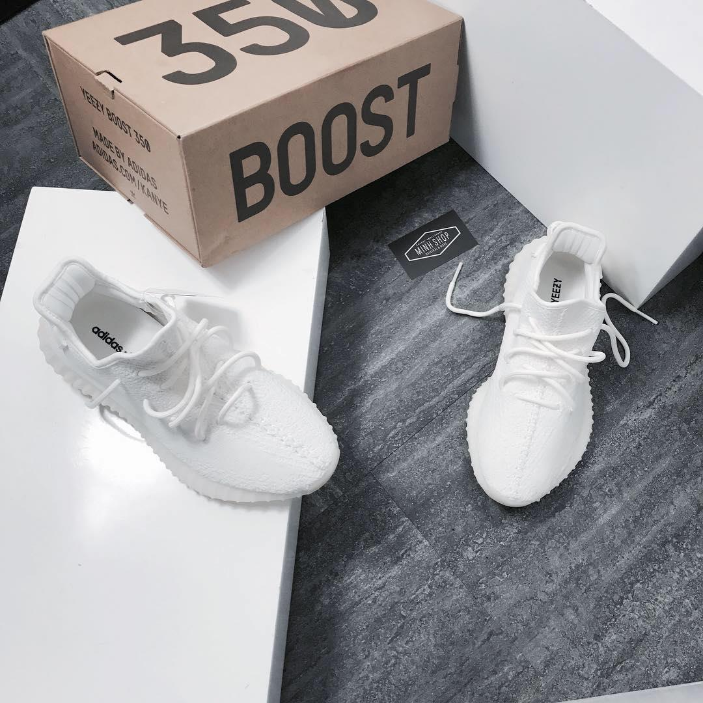
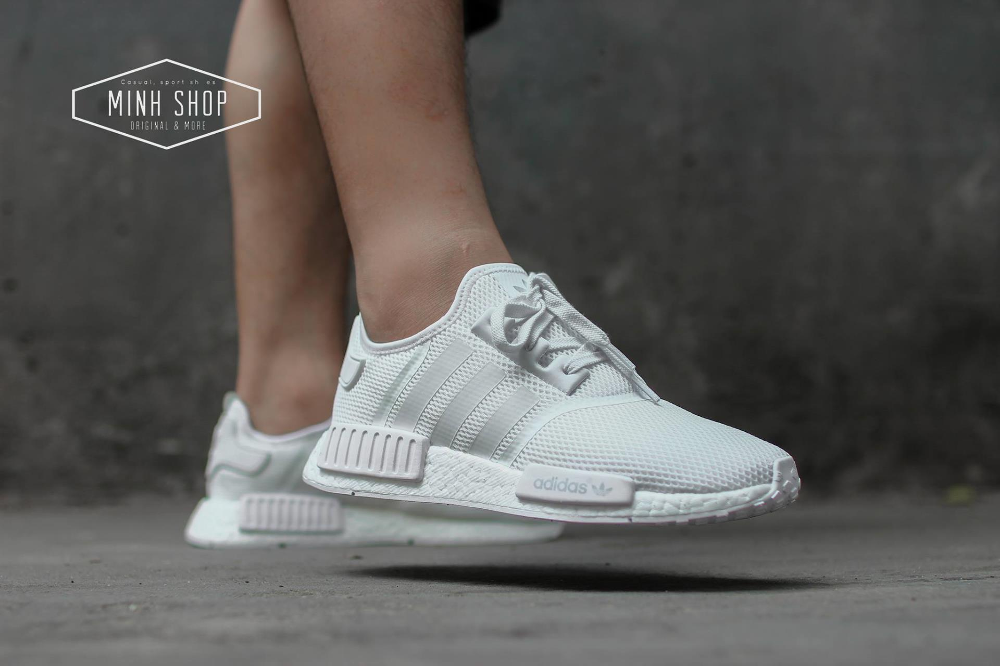
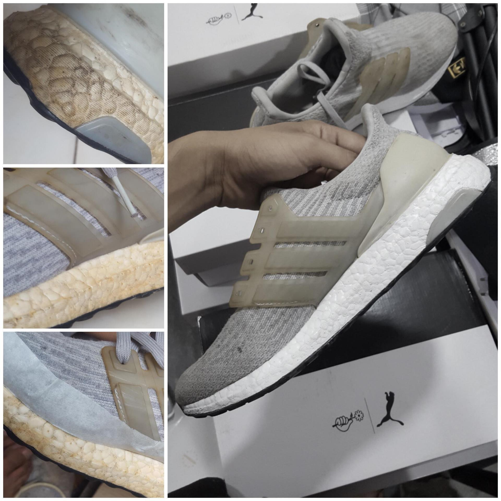
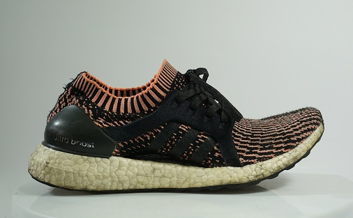
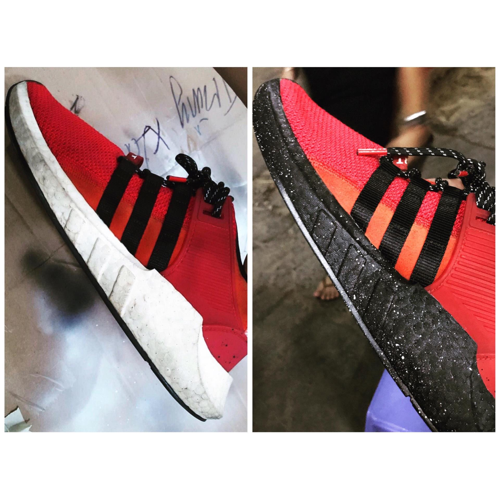

Thật vậy, với những mẫu giày tối tân mà Adidas kết hợp giữa sợi dệt prime knit và đế boost, thật không ngoa khi hãng nói rằng bạn đang thật sự bước trên một đám mây. Với NMD, bạn thật sự thoải bước với những gì tuyệt vời nhất. Với Ultra boost, bạn có thể thoả sức chạy bộ, gym, hay thậm chí cả là yoga. Với Yeezy, không cần thắt dây, chỉ cần xỏ vào tạo phong cách phóng khoáng, độ Hype nhất định khi kết hợp cùng jogger, Tee Shirt hoặc short pant cùng hoodie không có zip rộng thùng thình, chí ít thời điểm hiện tại, street wear đã khác hơn so với 10 năm trước là rất nhiều rồi
 Để nói về boost thì đôi khi một buổi cafe là không đủ, với những lợi ích mà nó mang lại thì khuyết điểm của đế boost là thứ mà nhiều người cân nhắc khi nhắm đến, thật sự thì một đôi boost ở Việt Nam mặt bằng chung thì giá vẫn khá cao khi so về tỉ giá, cho nên việc cần nhắc một món đồ rẻ bền đẹp mang lại hiệu năng lâu dài là điều mà khi sở hữu đế boost là mong muốn của nhiều người, bên cạnh đó với những người sở hữu rất nhiều đôi đế boost trong collection của họ thì mình vẫn muốn chia sẻ một số cách mà các bạn nên giữ cho đôi giày hoàn thiện nhất có thể.
như các bạn cũng đã biết, khoảng 2 tuần trước bọn mình có làm về Q-Shine, bộ Kit bao gồm chai nước rửa và bàn chải lông mịn, cách vệ sinh thì mình sẽ để video ở đây để các bạn tham khảo, làm sạch đế boost cũng như sợi vải prime knit thì cũng tương tự như video thôi, không có gì khác biệt đâu nha, tuy nhiên với đế boost thì việc ố của nó là do điều kiện tự nhiên và đặc tính của boost là như thế, các bạn kỹ tay hơn một xíu là ok

okay, vậy thì tạo sao đế boost lại như vậy ?, có phải do bạn không giữ gìn sạch sẽ, hay là do bạn đi đôi giày này quá nhiều ?
Hoàn toàn không phải như vậy, với đế boost, việc ố vàng sau một thời gian sử dụng là điều bình thường, như các bạn đã biết, đế boost là một dạng hạt li ti sử dụng công nghệ ép nhiệt để định hình lại đế sau một thời gian dù bạn sử dụng hay không thì đế boost cũng sẽ bị ố vàng khi tiếp xúc với môi trường nóng, nhất là thời tiết nhiệt đới gió mùa ở việt nam, nắng sài gòm đôi lúc có thể lên đến 38 39*C là chuyện bình thường, trời mát hoặc mưa thì không sao, tuy nhiên với một đôi giày boost, để tủ chống ẩm không có điều hoà, đế boost sẽ vàng theo một cách tự nhiên nhất có thể dù cho bạn có xách đôi giày lên và đi hay không
cách thứ 2, cũng là cách tốn ít công sức nhất đó là repaint giày, về repaint giày thì mình sẽ để một số mẫu ở đây để các bạn có thể tham khảo, nhìn chung thì đây là cách dễ dàng nhất và sau này bạn cũng không bị ố đế boost nữa, nhìn chung thì rất khó để giữ đế boost được hoàn hảo như tình trạng mới mua, nhưng để giữ cho đôi giày original nhất có thể thì adidas đã quyết định không phủ bất kỳ vật liệu nào lên bộ đế này, và sự lựa chọn là nằm ở các bạn, riêng mình thì mình luôn muốn giữ tình trạng đế boost hoàn hảo nhất có thể
